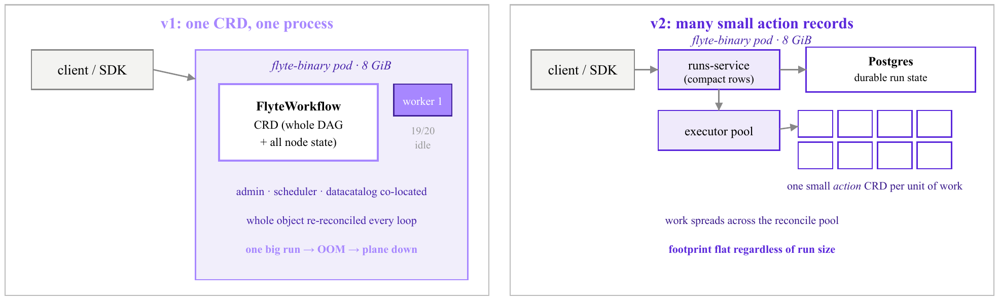
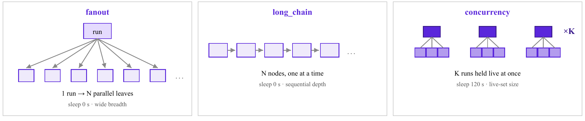
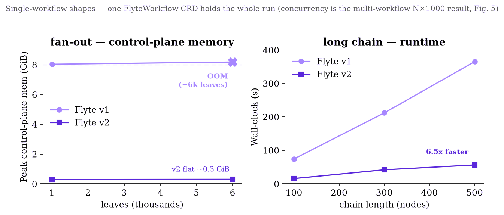
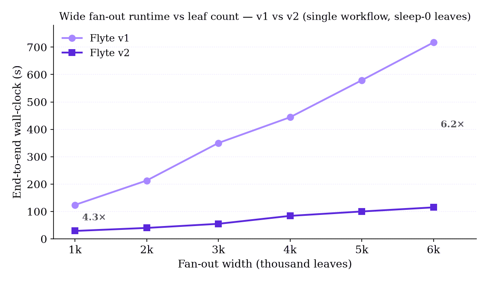
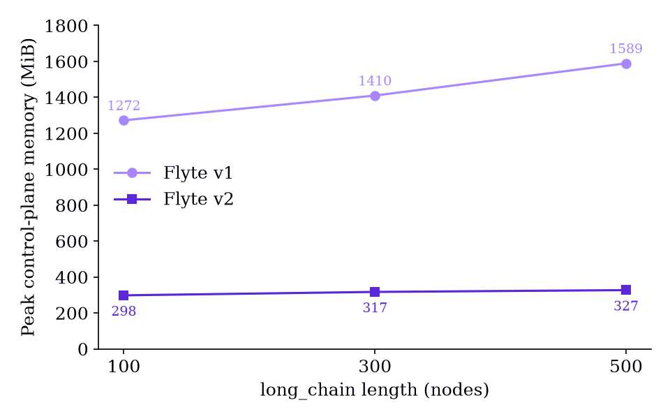
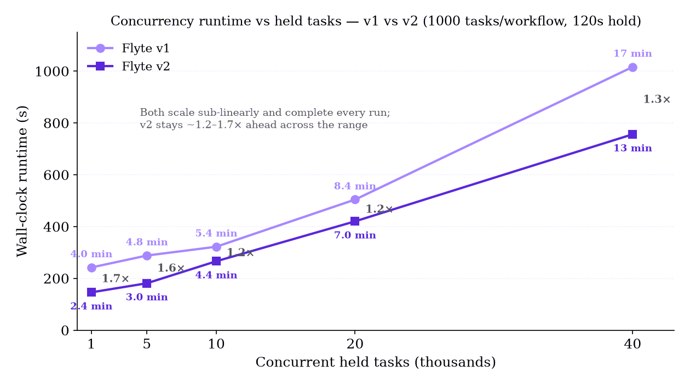

Technical report · Orchestrator scalability study · June 2026
Outscaling Flyte v1
Flyte v2’s per-action architecture runs common patterns up to 6.5× faster
Abstract
Flyte is a Kubernetes-native workflow orchestrator. Its original workflow engine
(v1, flytepropeller, a data-plane controller) represents each workflow execution
as a single custom resource (a FlyteWorkflow CRD) that one controller process
reconciles in its entirety on every loop. This design is simple but couples a run’s cost
to the size of one object and concentrates all of a run’s state in one shared,
memory-bounded binary. The redesigned architecture (v2, a control-plane runs-service plus
a data-plane executor) instead decomposes a run into many small actions, each its own
compact record reconciled independently, so no single in-memory object holds the whole run.
We benchmark the two designs on identical hardware (an 8 GiB engine pod on AWS EKS)
across three workload shapes (wide fan-out, sustained concurrency, and long sequential chains)
at scales from hundreds to forty thousand tasks. v2 completes the common patterns
4.3–6.5× faster and, critically, exhibits no single-process memory cliff: its engine
footprint stays flat at ~0.3 GiB (~4% of the limit) regardless of a run’s width, whereas
v1, holding a whole run in one CRD, drives the shared flyte-binary pod into the
8 GiB ceiling and OOM-kills at a ~6,000-leaf fan-out — an outage that affects every
tenant. Spread instead across many concurrent workflows, both planes complete every run and
scale sub-linearly once v1 runs at the same parallelism as v2
(--max-parallelism 1000): 40,000 held tasks finish in ~17 minutes on v1 and
~13 minutes on v2. We attribute v2’s gains to (i) eliminating whole-object
re-reconciliation, (ii) replacing per-workflow with per-action parallelism, and
(iii) spreading a run’s state across many small records instead of one in-memory object.
Figures

Figure 1.
The two orchestration designs. Both run as a single
flyte-binary pod under an identical 8 GiB limit; the difference is internal.
v1 concentrates an entire run in one FlyteWorkflow CRD reconciled by one worker
(19 of 20 workers sit idle during a wide run), so a single big job can OOM the pod and take
the co-located control plane down with it. v2 decomposes the run into many small action
records reconciled by a pool, with state and work both spread out.

Figure 2. The three workload shapes. fanout stresses parallel breadth (one run, N simultaneous leaves); long_chain stresses sequential depth (N nodes advanced one at a time); concurrency stresses steady-state held load (K runs kept live at once). Fan-out and long-chain leaves sleep 0 s to isolate orchestration cost; concurrency leaves sleep 120 s so the plane must hold the full live set.

Figure 3. Per-experiment scaling, v1 vs v2 (single-workflow shapes, parallelism 1000). Fan-out (left): v1’s engine memory grazes the 8 GiB ceiling and OOM-kills at ~6,000 leaves, while v2 stays flat at ~0.3 GiB. Long chain (right): v2 finishes a 500-node pipeline 6.5× faster. The two curves capture v2’s twin advantages — no memory cliff and lower latency.

Figure 4. Wide fan-out runtime vs leaf count (single workflow, sleep-0 leaves). v2 stays 4.3–6.4× faster across the range: 29 s vs 124 s at 1,000 leaves, 115 s vs 717 s at 6,000. v1’s single reconcile loop churns the whole growing CRD every tick, so its runtime climbs steeply; under held leaves that same width hits the 8 GiB memory cliff.

Figure 5. Footprint under length. Even where v1 does not OOM, its footprint tracks the run: across chain length 100→500, v1 memory grows 1,272→1,589 MiB because it re-reconciles one ever-larger CRD, while v2 holds flat near ~320 MiB. This is why v1’s headroom is workload-dependent and v2’s is not.

Figure 6.
Concurrency runtime vs held tasks (K workflows × 1000 tasks each, leaves
held 120 s). Run at matched --max-parallelism 1000, both planes complete every
workflow and scale sub-linearly; v2 stays ~1.2–1.7× ahead (146→756 s vs
242→1,016 s). This multi-workflow shape is where the two designs are closest —
per-action decomposition removes the memory cliff and cuts single-workflow latency far more than
it multiplies raw concurrent throughput.